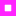

<!doctype html>
<html lang="en">
    <head>
        <meta charset="utf-8">
        <meta http-equiv="X-UA-Compatible" content="IE=edge">
        <meta name="viewport" content="initial-scale=1,user-scalable=no,maximum-scale=1,width=device-width">
        <meta name="mobile-web-app-capable" content="yes">
        <meta name="apple-mobile-web-app-capable" content="yes">
        <link rel="stylesheet" href="css/leaflet.css"><link rel="stylesheet" href="css/L.Control.Locate.min.css">
        <link rel="stylesheet" href="css/qgis2web.css"><link rel="stylesheet" href="css/fontawesome-all.min.css">
        <style>
        html, body, #map {
            width: 100%;
            height: 100%;
            padding: 0;
            margin: 0;
        }
        </style>
        <title></title>
    </head>
    <body>
        <div id="map">
        </div>
        <script src="js/qgis2web_expressions.js"></script>
        <script src="js/leaflet.js"></script><script src="js/L.Control.Locate.min.js"></script>
        <script src="js/leaflet.rotatedMarker.js"></script>
        <script src="js/leaflet.pattern.js"></script>
        <script src="js/leaflet-hash.js"></script>
        <script src="js/Autolinker.min.js"></script>
        <script src="js/rbush.min.js"></script>
        <script src="js/labelgun.min.js"></script>
        <script src="js/labels.js"></script>
        <script src="data/PERTIMA_1.js"></script>
        <script src="data/PERTIMA1908_2.js"></script>
        <script>
        var highlightLayer;
        function highlightFeature(e) {
            highlightLayer = e.target;

            if (e.target.feature.geometry.type === 'LineString') {
              highlightLayer.setStyle({
                color: '#ffff00',
              });
            } else {
              highlightLayer.setStyle({
                fillColor: '#ffff00',
                fillOpacity: 1
              });
            }
        }
        var map = L.map('map', {
            zoomControl:true, maxZoom:28, minZoom:1
        })
        var hash = new L.Hash(map);
        map.attributionControl.setPrefix('<a href="https://github.com/tomchadwin/qgis2web" target="_blank">qgis2web</a> &middot; <a href="https://leafletjs.com" title="A JS library for interactive maps">Leaflet</a> &middot; <a href="https://qgis.org">QGIS</a>');
        var autolinker = new Autolinker({truncate: {length: 30, location: 'smart'}});
        L.control.locate({locateOptions: {maxZoom: 19}}).addTo(map);
        var bounds_group = new L.featureGroup([]);
        function setBounds() {
            if (bounds_group.getLayers().length) {
                map.fitBounds(bounds_group.getBounds());
            }
        }
        map.createPane('pane_GoogleSatellite_0');
        map.getPane('pane_GoogleSatellite_0').style.zIndex = 400;
        var layer_GoogleSatellite_0 = L.tileLayer('https://mt1.google.com/vt/lyrs=s&x={x}&y={y}&z={z}', {
            pane: 'pane_GoogleSatellite_0',
            opacity: 1.0,
            attribution: '<a href="https://www.google.at/permissions/geoguidelines/attr-guide.html">Map data ©2015 Google</a>',
            minZoom: 1,
            maxZoom: 28,
            minNativeZoom: 0,
            maxNativeZoom: 20
        });
        layer_GoogleSatellite_0;
        map.addLayer(layer_GoogleSatellite_0);
        function pop_PERTIMA_1(feature, layer) {
            layer.on({
                mouseout: function(e) {
                    for (i in e.target._eventParents) {
                        e.target._eventParents[i].resetStyle(e.target);
                    }
                },
                mouseover: highlightFeature,
            });
        }

        function style_PERTIMA_1_0() {
            return {
                pane: 'pane_PERTIMA_1',
                opacity: 1,
                color: 'rgba(255,127,0,1.0)',
                dashArray: '',
                lineCap: 'butt',
                lineJoin: 'miter',
                weight: 8.0, 
                fill: true,
                fillOpacity: 1,
                fillColor: 'rgba(141,90,153,0.0)',
                interactive: true,
            }
        }
        map.createPane('pane_PERTIMA_1');
        map.getPane('pane_PERTIMA_1').style.zIndex = 401;
        map.getPane('pane_PERTIMA_1').style['mix-blend-mode'] = 'normal';
        var layer_PERTIMA_1 = new L.geoJson(json_PERTIMA_1, {
            attribution: '',
            interactive: true,
            dataVar: 'json_PERTIMA_1',
            layerName: 'layer_PERTIMA_1',
            pane: 'pane_PERTIMA_1',
            onEachFeature: pop_PERTIMA_1,
            style: style_PERTIMA_1_0,
        });
        bounds_group.addLayer(layer_PERTIMA_1);
        map.addLayer(layer_PERTIMA_1);
        function pop_PERTIMA1908_2(feature, layer) {
            layer.on({
                mouseout: function(e) {
                    for (i in e.target._eventParents) {
                        e.target._eventParents[i].resetStyle(e.target);
                    }
                },
                mouseover: highlightFeature,
            });
            var popupContent = '<table>\
                    <tr>\
                        <th scope="row">KANTAH</th>\
                        <td>' + (feature.properties['KANTAH'] !== null ? autolinker.link(feature.properties['KANTAH'].toLocaleString()) : '') + '</td>\
                    </tr>\
                    <tr>\
                        <th scope="row">KECAMATAN</th>\
                        <td>' + (feature.properties['KECAMATAN'] !== null ? autolinker.link(feature.properties['KECAMATAN'].toLocaleString()) : '') + '</td>\
                    </tr>\
                    <tr>\
                        <th scope="row">DESA</th>\
                        <td>' + (feature.properties['DESA'] !== null ? autolinker.link(feature.properties['DESA'].toLocaleString()) : '') + '</td>\
                    </tr>\
                    <tr>\
                        <th scope="row">KODEWILAYA</th>\
                        <td>' + (feature.properties['KODEWILAYA'] !== null ? autolinker.link(feature.properties['KODEWILAYA'].toLocaleString()) : '') + '</td>\
                    </tr>\
                    <tr>\
                        <th scope="row">NIB</th>\
                        <td>' + (feature.properties['NIB'] !== null ? autolinker.link(feature.properties['NIB'].toLocaleString()) : '') + '</td>\
                    </tr>\
                    <tr>\
                        <th scope="row">SU</th>\
                        <td>' + (feature.properties['SU'] !== null ? autolinker.link(feature.properties['SU'].toLocaleString()) : '') + '</td>\
                    </tr>\
                    <tr>\
                        <th scope="row">PBT</th>\
                        <td>' + (feature.properties['PBT'] !== null ? autolinker.link(feature.properties['PBT'].toLocaleString()) : '') + '</td>\
                    </tr>\
                    <tr>\
                        <th scope="row">NOMORHAK</th>\
                        <td>' + (feature.properties['NOMORHAK'] !== null ? autolinker.link(feature.properties['NOMORHAK'].toLocaleString()) : '') + '</td>\
                    </tr>\
                    <tr>\
                        <th scope="row">LUASTERTUL</th>\
                        <td>' + (feature.properties['LUASTERTUL'] !== null ? autolinker.link(feature.properties['LUASTERTUL'].toLocaleString()) : '') + '</td>\
                    </tr>\
                    <tr>\
                        <th scope="row">PEMILIK</th>\
                        <td>' + (feature.properties['PEMILIK'] !== null ? autolinker.link(feature.properties['PEMILIK'].toLocaleString()) : '') + '</td>\
                    </tr>\
                    <tr>\
                        <th scope="row">STATUS</th>\
                        <td>' + (feature.properties['STATUS'] !== null ? autolinker.link(feature.properties['STATUS'].toLocaleString()) : '') + '</td>\
                    </tr>\
                </table>';
            layer.bindPopup(popupContent, {maxHeight: 400});
        }

        function style_PERTIMA1908_2_0(feature) {
            switch(String(feature.properties['STATUS'])) {
                case 'BIDANG_K3':
                    return {
                pane: 'pane_PERTIMA1908_2',
                opacity: 1,
                color: 'rgba(31,120,180,1.0)',
                dashArray: '',
                lineCap: 'butt',
                lineJoin: 'miter',
                weight: 8.0, 
                fill: true,
                fillOpacity: 1,
                fillColor: 'rgba(31,120,180,0.0)',
                interactive: true,
            }
                    break;
                case 'SERTIPIKAT':
                    return {
                pane: 'pane_PERTIMA1908_2',
                opacity: 1,
                color: 'rgba(255,35,255,1.0)',
                dashArray: '',
                lineCap: 'butt',
                lineJoin: 'miter',
                weight: 8.0, 
                fill: true,
                fillOpacity: 1,
                fillColor: 'rgba(103,151,209,0.0)',
                interactive: true,
            }
                    break;
                case 'UNSUR_GEOGRAFIS':
                    return {
                pane: 'pane_PERTIMA1908_2',
                opacity: 1,
                color: 'rgba(251,236,121,1.0)',
                dashArray: '',
                lineCap: 'butt',
                lineJoin: 'miter',
                weight: 4.0, 
                fill: true,
                fillOpacity: 1,
                fillColor: 'rgba(114,206,119,0.0)',
                interactive: true,
            }
                    break;
            }
        }
        map.createPane('pane_PERTIMA1908_2');
        map.getPane('pane_PERTIMA1908_2').style.zIndex = 402;
        map.getPane('pane_PERTIMA1908_2').style['mix-blend-mode'] = 'normal';
        var layer_PERTIMA1908_2 = new L.geoJson(json_PERTIMA1908_2, {
            attribution: '',
            interactive: true,
            dataVar: 'json_PERTIMA1908_2',
            layerName: 'layer_PERTIMA1908_2',
            pane: 'pane_PERTIMA1908_2',
            onEachFeature: pop_PERTIMA1908_2,
            style: style_PERTIMA1908_2_0,
        });
        bounds_group.addLayer(layer_PERTIMA1908_2);
        map.addLayer(layer_PERTIMA1908_2);
        var baseMaps = {};
        L.control.layers(baseMaps,{'PERTIMA 19-08<br /><table><tr><td style="text-align: center;"></td><td>BIDANG_K3</td></tr><tr><td style="text-align: center;"></td><td>SERTIPIKAT</td></tr><tr><td style="text-align: center;"></td><td>UNSUR_GEOGRAFIS</td></tr></table>': layer_PERTIMA1908_2,' PERTIMA': layer_PERTIMA_1,"Google Satellite": layer_GoogleSatellite_0,}).addTo(map);
        setBounds();
        resetLabels([layer_PERTIMA1908_2]);
        map.on("zoomend", function(){
            resetLabels([layer_PERTIMA1908_2]);
        });
        map.on("layeradd", function(){
            resetLabels([layer_PERTIMA1908_2]);
        });
        map.on("layerremove", function(){
            resetLabels([layer_PERTIMA1908_2]);
        });
        </script>
    </body>
</html>
